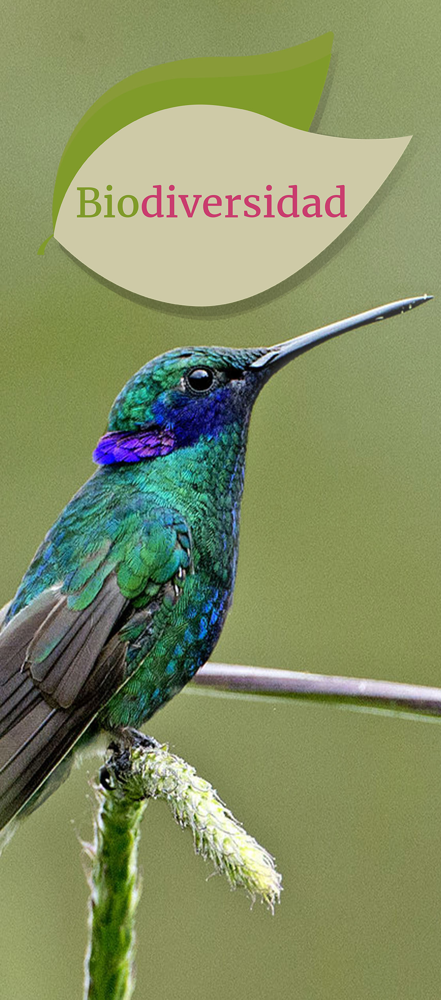

Análisis del tema
Se abordan aspectos como: nombre, ubicación taxonómica, características tales como el peso, longitud, temperatura corporal, peculiaridades del pico y lengua, coloración, ornamentación del plumaje, colores de las cretas y plumas de la garganta; número aproximado de especies en el continente americano y en nuestro país, distribución, espectro ecológico, hábitat, conducta migratoria, vuelo característico, tipo de alimentación, nicho ecológico y especies endémicas mexicanas.
Este tema de Biodiversidad y conservación biológica explica la riqueza de especies, la abundancia, la distribución y los endemismos que determinan la regionalización de la biodiversidad.